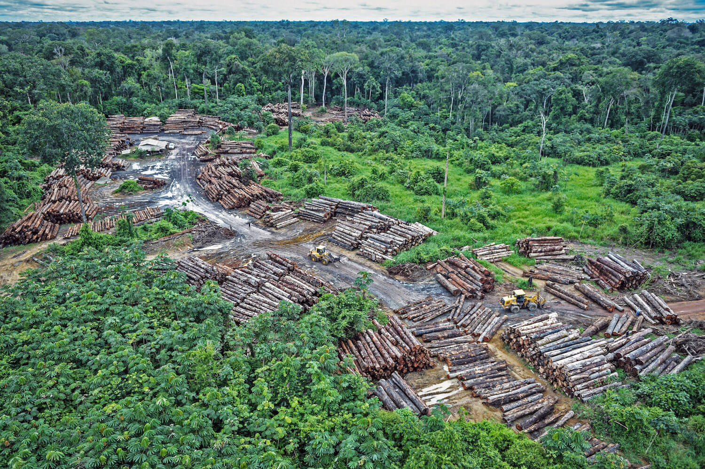
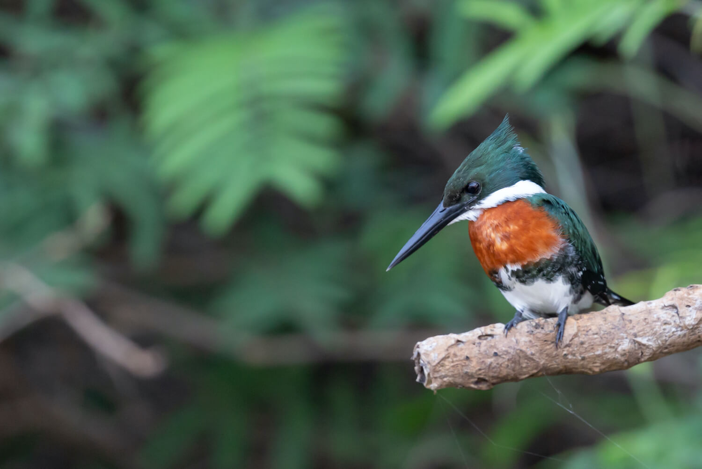

The Amazonian rainforest is vital to mitigating the impacts of climate
change. However, findings suggest that, due to ongoing human disturbances,
deforested areas of the world’s largest rainforest are not recovering
at a fast-enough rate.
A collaborative study between the University of Bristol and Brazil’s
National Institute for Space Research, have determined that different
drivers are linked to the regional variations in forest regrowth within
the Amazon. The paper, published in Nature Communication on 19 March
2021, used four decades worth of land satellite data in order to measure
the age, type, aboveground carbon levels and human activity of its forest canopy.
Just last year, images exposing the extensive burning of the Amazon
rainforest spread like wildfire across global media. Despite the claims
from President Jair Bolsonaro that these were false, Brazilian scientists
themselves published data directly linking the fires to the agricultural
slash-and-burn practices set by loggers and cattle ranchers.

Illegal logging on the Pirititi indigenous Amazon lands in May 2018. | Flickr / Quapan
By taking up three per cent of terrestrial land, the Amazon rainforest
surpasses any other in being the largest continuous tropical forest on
Earth. Forests act as a carbon sink and are estimated to be able to
mitigate a quarter of the measures set under the Paris agreement. Often
referred to as the ‘Earth’s lungs’, the Amazon itself stores 10 percent
of global forest carbon.
The remote sensing technique allowed the research group to continue to
collect data during the COVID-19 pandemic, in which Brazil has been
particularly hard hit. The data provided evidence for significant
differences in growth rates between three types of forests in the
Amazon: Old primary forests, young secondary forests (less than 20
years old) and older secondary forests (above 20 years old).
‘The Amazon itself stores 10 percent of global forest carbon.’
Lead author and PhD student from the University of Bristol, Viola Heinrich,
explained: ‘This type of approach using regional and global remote
sensing products has not been attempted before to such a high spatial
resolution. The models have the potential to benefit both the carbon
modelling and carbon-policy communities to help understand the regional
variations of regrowth under different drivers.’
Old primary forests are those which are untouched and exist in their
original state. According to Mongabay, they are ‘often characterized
by a full ceiling canopy and usually several layers of understory.’
Young, secondary forests are forests that have been disturbed in one
way or another, mostly through human activity. Therefore, they lack
a full canopy, have less tree density and allow much light to reach
the ground, often leading to overgrowth of ground-level vegetation.
Secondary forests currently take up 20 percent of the Amazon’s area.
They often are part of a five to ten-year cycle of being cleared for
agricultural purposes and then abandoned, when the soil becomes
depleted of any nutrients and thus insufficient for crop growth.
Despite the fact that young secondary forests have great regeneration
potential, they are not protected by any policies. Therefore, they
are constantly prone to being deforested before they can reach the
ecological potential of primary forests.
Primary findings of the researchers
The overriding anthropogenic cause for slower growth rates of
secondary forests were those which grow on land which experienced
multiple deforestation events through the use of slash-and-burn
practices. This is due to its degradation of seed banks, soil nutrient
content and water availability. The team found these growth rates to
slow by 20 to 50 per cent.
The use of the slash-and-burn technique clears sections of rainforest
and fertilizes it by burning pre-existing plants, then planting the
crop of choice. However, the land only remains suitable for around
two to three years, before the soil becomes degraded. The farmer moves
on, but often returns to repeat this cycle every five to ten years later.
The team found geographic variations in the effects human disturbance
has on reforestation rates, which may provide guidance for which
areas are of priority for conservation. Secondary forests in the eastern
regions of the Amazon seem to be more affected by slash-and-burn
techniques than the western regions, slowing growth by 20 percent and
50 percent, respectively. This is likely due to the wetter climate of
the western Amazon.
Additionally, the southern region of the Amazon, also known as the
‘Arc of Deforestation,’ is at a higher risk than the north, due to
its drier climate. Here, growth rates averagely decrease 40 to 50 per
cent due to human activity. The findings, therefore, indicate that the
South-Eastern forests of the Amazon are in need of most urgent protection.
It was also concluded that it takes secondary forests a minimum of
100-years to achieve the above ground carbon (AGC) potential of older
forests. AGC refers to the fraction of carbon stored in tree biomass.
Thus, their findings suggest that young, secondary forests (less than
20 years) do not match older primary forests in their ability to
mitigate the impacts of climate change.

Male Amazon Kingfisher in Brazil | Flickr / Martha de Jong-Lantink
Implications for conservation policies
The researchers suggest that Brazil must implement policies that focus
on conserving both older, secondary forests (above 20 years) and old,
primary forests. It is vital to allow secondary forests to reach the
full AGC storage potential of primary forests. If they are constantly
felled through slash-and-burn practices, the AGC potential of secondary
forests is likely to plateau at 40-years of age.
The ecosystem services these forests provide are extremely undervalued.
Currently, less than one per cent of secondary forests above 20-years
old are preserved. It is estimated that anthropogenic disturbances in
the Amazon has already caused an eight per cent loss in total potential
2017 carbon stock.
The team believes the conservation of these older secondary forests
are key to climate change mitigation solutions in the long run, whereas
conserving older primary forests are critical to meeting policy-relevant timescales.
‘There is no mention of the 12 million hectares that had been
[previously] committed to reforestation.’
Taking immediate action to preserve the current secondary forests
could contribute to six percent of Brazil’s net emissions reduction
targets. These estimates do not even include the potential of re-growing
secondary forests, which Heinrich believes, ‘could help Brazil reach
its Nationally Determined Contributions (NDC) goals of reducing net
national emissions by 43 percent in 2030.’
However, just in December 2020, Brazil amended its pledge (NDC) under
the Paris Agreement. There is no mention of the 12 million hectares
that had been committed to reforestation in 2015. On 9 April 2021,
Vice President Hamilton Mourão released Brazil’s plan towards mitigating
deforestation in the Amazon throughout 2021 to 2022.
Vice President Mourão recently stated that legalizing mining in the
gold-rich indigenous lands of the Amazon would reroute illegal mining
activity in protected areas. He believes that those mining would comply
with environmental laws set out in those legalized areas. However,
environmentalists say that this would only increase illegal logging
and commercialize traditional indigenous lands, breaching their
livelihoods and rights.
Map of deforestation rates of Amazon rainforest states since the
Bolsonaro Administration took office in 2019 | Instituto Nacional
de Pesquisas Espaciais (INPE) / Terra Brasilis
According to the National Institute for Space Research (Instituto Nacional
de Pesquisas Espaciais – INPE), 7,500 km2 of the Legal Amazon was
deforested in 2018. The new Amazon Plan of 2021/2022 still allows 16
per cent more deforestation than in 2018, which is the year before
President Bolsonaro took office. This means that this new plan claiming
to mitigate deforestation is not as ambitious as the government makes
it out to be, as it would still allow around 8,700 km2 to be deforested
in the next year.
Rates of deforestation in the Legal Amazon drastically increased when
President Jair Bolsonaro took leadership of the country in 2019.
Terra
Brasilis, an online portal set up by the INPE to display up-to-date
data on the Amazon, shows that the rainforest lost 10,100 km2 in 2019
and another 11,100 km2 in 2021. Most of the deforestation taking
place in these years have occurred in the Pará state, in the north of
Brazil.
The
Amazon Plan for 2021/2022 is very vague and does not outline any
specific measures on how to target illegal deforestation; which
mostly stems from mining, soy and cattle ranching. The policy brief,
which came into action upon its publication on 9 April 20201, intends
to merge together agencies in order to mitigate deforestation. It
also aims to create ‘bio-economies’; an alternative source of income
for those communities residing within and around the rainforest, via
further developing their healthcare and infrastructure.
‘The new plan would still allow around 8,7002 to be deforested in
the next year.’
Particularly during COVID-19, conservation priorities have been pushed
even further back, as Brazil is struggling to alleviate the pressures
which the pandemic has placed on its economy. It is believed that the
Bolsonaro administration is also using the COVID-19 as a distraction,
in order to reverse previously pledged environmental regulations.
According to the Climate Action Tracker, Brazilian legislators have
recently fast-tracked the approval of handing over highly controversial
ownership of illegally deforested land. This rollback and gap in
much-needed policies will likely cause even higher rates of
deforestation and hinder decarbonization of Brazil’s economy.
‘Brazil is likely to be the tropical country with the largest potential
for this kind of Nature-based solution, which can generate income to
landowners, reestablish ecosystems services and place the country
again as a global leader in the fight against climate change,’ explains
co-author of the study, Dr Luiz Aragão, National Institute of Space
Research in Brazil.
Brazil needs to become incentivized to shift to a green economy, as
sustainable management of the Amazon rainforest has the possibility
of being a huge source of revenue for the country.
Feature Image: Eduardo Zmievski | Unsplash
Heinrich et al. (2021) Large carbon sink potential of secondary forests in the Brazilian Amazon to mitigate climate change. Nature Communications. Volume 12. <https:
//www.nature.com/articles/s41467-021-22050-1.pdf>
UN Climate Change Conference (COP26) at the SEC – Glasgow 2021. [online] Available at: <https://ukcop26.org> [Accessed 18 March 2021].
Mongabay.com. 2012. Types of Rainforests. [online] Available at: <https://rainforests.mongabay.com/0103.html> [Accessed 19 May 2021].
Terra Brasilis 2021. Legal Amazon Deforestation Rates. Instituto Nacional de Pesquisas Espaciais [online] Available at:
<http://terrabrasilis.dpi.inpe.br/app/dashboard/deforestation/biomes/legal_amazon/rates> [Accessed 21 March 2021].
Governo do Brazil, 2021. Plano Amazônia 2021/2022. DIÁRIO OFICIAL DA UNIÃO, pp.8-11. [online] Available at:
<https://www.in.gov.br/en/web/dou/-/resolucao-n-3-de-9-de-abril-de-2021-314033004> [Accessed 21 March 2021].]
.png)